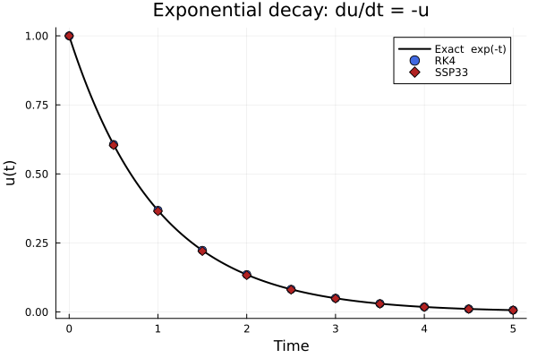
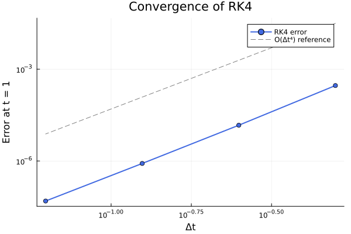

ClimaTimeSteppers.jl
High-performance ODE solvers for climate model time-stepping
Overview
ClimaTimeSteppers.jl provides ordinary differential equation (ODE) solvers designed for use as time-stepping methods in partial differential equation (PDE) solvers such as ClimaAtmos.jl and ClimaLand.jl. The solvers are specifically written to support distributed and GPU computation while minimizing the memory footprint.
Key Features
- IMEX methods: Implicit-explicit additive Runge-Kutta (ARK) methods that treat stiff and non-stiff tendencies separately, including 30+ published tableaux (ARS, IMKG, SSP, ARK families) up to 5th order.
- SSP methods: Strong stability preserving methods with built-in limiter support for monotonicity-preserving advection.
- Rosenbrock methods: Linearly implicit methods that replace Newton iterations with a single linear solve per stage.
- Low-storage Runge-Kutta: Memory-efficient 2N-storage explicit methods requiring only two state-sized arrays.
- Multirate methods: Multirate infinitesimal step (MIS) and Wicker-Skamarock schemes for problems with separated timescales.
- Flexible Newton solver: Configurable Jacobian update strategies, Krylov methods (GMRES), Jacobian-free Newton-Krylov (JFNK), and adaptive forcing terms.
- Automatic differentiation: Fully compatible with automatic differentiation (e.g., ForwardDiff.jl). Dual numbers propagate through all solver families, enabling gradient-based calibration and sensitivity analysis. See the AD tutorial.
Installation
ClimaTimeSteppers.jl is a registered Julia package:
using Pkg
Pkg.add("ClimaTimeSteppers")Quick Start
The following example solves the scalar ODE $du/dt = -u$ (exponential decay) using several methods and compares the results to the exact solution $u(t) = e^{-t}$.
using ClimaTimeSteppers
import ClimaTimeSteppers as CTS
# ── 1. Define the problem ────────────────────────────────────────────────────
# du/dt = -u, u(0) = 1, t ∈ [0, 5]
T_exp!(du, u, p, t) = (du .= -u)
f = ClimaODEFunction(; T_exp!)
# ── 2. Solve with two explicit algorithms ─────────────────────────────────────
algorithms = [
("RK4", ExplicitAlgorithm(RK4())),
("SSP33", ExplicitAlgorithm(SSP33ShuOsher())),
]
solutions = Dict{String, Any}()
for (name, alg) in algorithms
# Fresh problem each iteration (solve! mutates u0 in place)
prob = CTS.ODEProblem(f, [1.0], (0.0, 5.0), nothing)
sol = CTS.solve(prob, alg; dt = 0.5, save_everystep = true)
solutions[name] = sol
end
# ── 3. Plot ──────────────────────────────────────────────────────────────────
using Plots
t_exact = range(0.0, 5.0; length = 200)
u_exact = exp.(-t_exact)
plt = plot(t_exact, u_exact;
label = "Exact exp(-t)", lw = 2, color = :black,
xlabel = "Time", ylabel = "u(t)",
title = "Exponential decay: du/dt = -u")
markers = [:circle, :diamond]
colors = [:royalblue, :firebrick]
for (idx, (name, _)) in enumerate(algorithms)
sol = solutions[name]
scatter!(plt, sol.t, [v[1] for v in sol.u];
label = name, marker = markers[idx], color = colors[idx],
markersize = 5)
end
savefig(plt, "quickstart_decay.png")
Both methods track the exact solution closely at this timestep.
Convergence
We can verify that the methods converge at their expected orders by running with progressively smaller timesteps:
alg = ExplicitAlgorithm(RK4()) # 4th-order method
dts = [0.5, 0.25, 0.125, 0.0625]
errors = Float64[]
for dt in dts
conv_prob = CTS.ODEProblem(f, [1.0], (0.0, 1.0), nothing)
sol = CTS.solve(conv_prob, alg; dt = dt, saveat = (1.0,))
push!(errors, abs(sol.u[end][1] - exp(-1.0)))
end
plt2 = plot(dts, errors;
xscale = :log10, yscale = :log10,
marker = :circle, lw = 2, color = :royalblue,
label = "RK4 error",
xlabel = "Δt", ylabel = "Error at t = 1",
title = "Convergence of RK4")
# Reference slope for order 4
plot!(plt2, dts, 0.5 * dts .^ 4;
ls = :dash, color = :gray, label = "O(Δt⁴) reference")
savefig(plt2, "quickstart_convergence.png")
The error decreases as $\Delta t^4$, confirming 4th-order convergence.
Step-by-step integration
For finer control, create an integrator and advance it manually:
prob = CTS.ODEProblem(f, [1.0], (0.0, 5.0), nothing) # fresh problem
integrator = CTS.init(prob, ExplicitAlgorithm(SSP33ShuOsher()); dt = 1.0)
CTS.step!(integrator) # advance one step
println("After 1 step: t = ", integrator.t, ", u = ", integrator.u)
CTS.step!(integrator) # another step
println("After 2 steps: t = ", integrator.t, ", u = ", integrator.u)
sol = CTS.solve!(integrator) # run to completion
println("Final: t = ", sol.t[end], ", u = ", sol.u[end])After 1 step: t = 1.0, u = [0.33333333333333337]
After 2 steps: t = 2.0, u = [0.11111111111111113]
Final: t = 5.0, u = [0.004115226337448562]Documentation Structure
| Section | Description |
|---|---|
| Algorithm Formulations | Mathematical properties of IMEX ARK, SSPRK, Rosenbrock, LSRK, and multirate methods |
| Algorithm Properties | Stability regions and convergence plots for all implemented schemes |
| Tutorials | IMEX diffusion, automatic differentiation, and spherical diffusion (ClimaCore) |
| API Reference | Complete docstrings for all types and functions |
| Developer Docs | Type hierarchies and convergence report generation |
| Contributing | How to contribute, code guidelines, and CI checks |
| References | Bibliography of cited papers |
Related Packages
ClimaTimeSteppers.jl is part of the CliMA ecosystem:
- ClimaAtmos.jl: Atmospheric model
- ClimaLand.jl: Land surface model
- ClimaCoupler.jl: Model coupler
- ClimaCore.jl: Spectral element spatial discretization
- ClimaComms.jl: Distributed and GPU communication
ClimaTimeSteppers — Module
ClimaTimeSteppersODE solvers for climate model time-stepping. Designed for distributed and GPU computation with minimal memory footprint.
Core workflow
import ClimaTimeSteppers as CTS
# Define tendency functions and Jacobian (W = dtγ J - I) for the implicit part
T_imp = CTS.ODEFunction(T_imp!; jac_prototype = W, Wfact = Wfact!)
f = CTS.ClimaODEFunction(; T_exp! = T_exp!, T_imp! = T_imp)
prob = CTS.ODEProblem(f, u0, tspan, p)
alg = IMEXAlgorithm(ARS343(), NewtonsMethod(; max_iters = 2))
sol = CTS.solve(prob, alg; dt = 0.01)Or step-by-step:
integrator = CTS.init(prob, alg; dt = 0.01)
CTS.step!(integrator) # one step
CTS.solve!(integrator) # run to completionKey types
ODEProblem: problem definition (function, initial state, time span, parameters)ClimaODEFunction: tendency container for IMEX / Rosenbrock solversTimeSteppingAlgorithm: abstract supertype for all algorithmsTimeStepperIntegrator: mutable integrator stateODESolution: solution container with saved time points and states